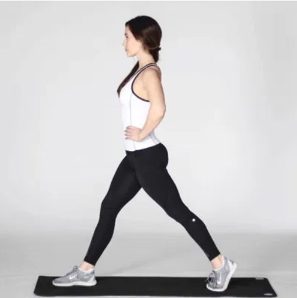
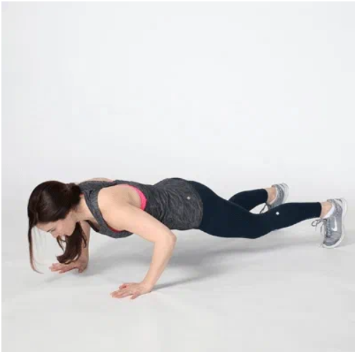
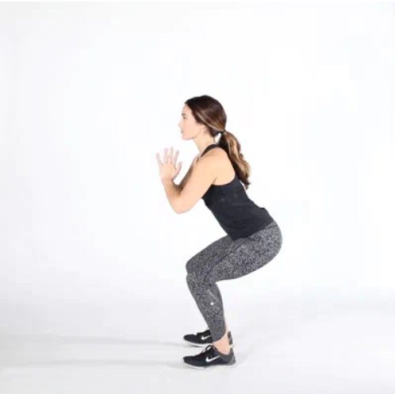
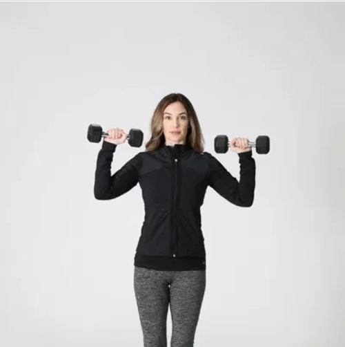
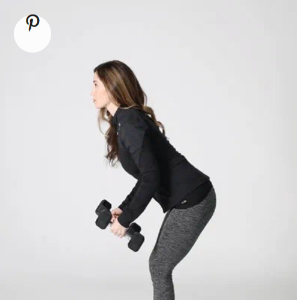
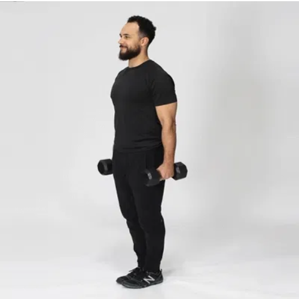
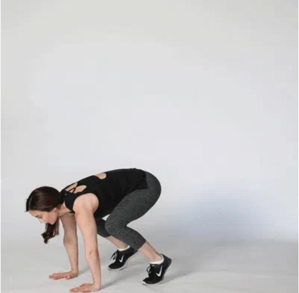
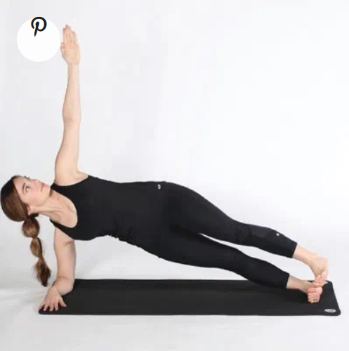
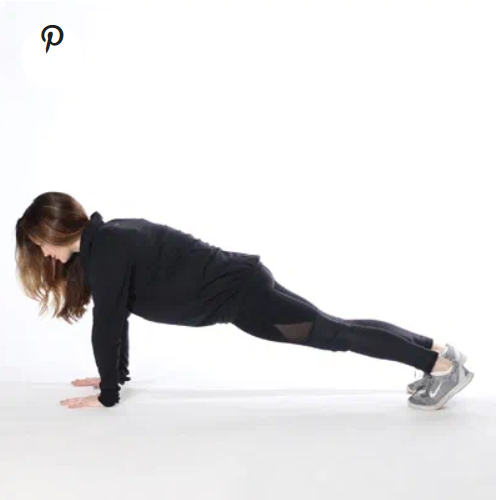
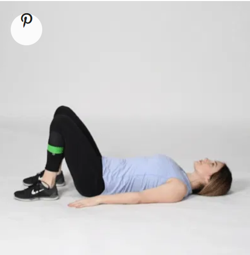

10 Exercises to Tone Every Inch of Your Body
Benefits of working out
We know daily exercise is good for optimizing health. But with so many options and limitless information available, it’s easy to get overwhelmed with what works. But not to worry. We’ve got your back (and body)!
Check out the 10 exercises you can do for ultimate fitness. Combine them into a routine for a workout that’s simple but powerful and sure to keep you in shape for the rest of your life.
Why these 10 exercises will rock your body
One surefire way to attack your fitness regimen effectively? Keep the fuss to a minimum and stick with the basics.
1. Lunges
Challenging your balance is an essential part of a well-rounded exercise routine. Lunges do just that, promoting functional movement while also increasing strength in your legs and glutes.

1.Start by standing with your feet shoulder-width apart and arms down at your sides.
2.Take a step forward with your right leg and bend your right knee as you do so, stopping when your thigh is parallel to the ground. Ensure that your right knee doesn’t extend past your right foot.
3.Push up off your right foot and return to the starting position. Repeat with your left leg. This is one rep.
4.Complete 3 sets of 10 reps.
2. Pushups
Drop and give me 20! Pushups are one of the most basic yet effective bodyweight moves you can perform because of the number of muscles that are recruited to perform them.

1.Start in a plank position. Your core should be tight, shoulders pulled down and back, and your neck neutral.
2.Bend your elbows and begin to lower your body down to the floor. When your chest grazes it, extend your elbows and return to the start. Focus on keeping your elbows close to your body during the movement.
3.Complete 3 sets of as many reps as possible.
If you can’t quite perform a standard pushup with good form, drop down to a modified stance on your knees — you’ll still reap many of the benefits from this exercise while building strength.
3. Squats
Squats increase lower body and core strength, as well as flexibility in your lower back and hips. Because they engage some of the largest muscles in the body, they also pack a major punch in terms of calories burned.

1.Start by standing straight, with your feet slightly wider than shoulder-width apart, and your arms at your sides.
2.Brace your core and, keeping your chest and chin up, push your hips back and bend your knees as if you’re going to sit in a chair.
3.Ensuring your knees don’t bow inward or outward, drop down until your thighs are parallel to the ground, bringing your arms out in front of you in a comfortable position. Pause for 1 second, then extend your legs and return to the starting position.
4.Complete 3 sets of 20 reps.
4. Standing overhead dumbbell presses
Compound exercises, which utilize multiple joints and muscles, are perfect for busy bees as they work several parts of your body at once. A standing overhead press isn’t only one of the best exercises you can do for your shoulders, but it also engages your upper back and core.

1.Pick a light set of dumbbells — we recommend 10 pounds to start — and start by standing, either with your feet shoulder-width apart or staggered. Move the weights overhead so your upper arms are parallel to the floor.
2.Bracing your core, begin to push up until your arms are fully extended above your head. Keep your head and neck stationary.
3.After a brief pause, bend your elbows and lower the weight back down until your triceps muscle is parallel to the floor again.
4.Complete 3 sets of 12 reps.
5. Dumbbell rows
Not only will these make your back look killer in that dress, but dumbbell rows are also another compound exercise that strengthens multiple muscles in your upper body. Choose a moderate-weight dumbbell and ensure that you’re squeezing at the top of the movement.

1.Start with a dumbbell in each hand. We recommend no more than 10 pounds for beginners.
2.Bend forward at the waist, so your back is at a 45-degree angle to the ground. Be certain not to arch your back. Let your arms hang straight down. Ensure your neck is in line with your back and your core is engaged.
3.Starting with your right arm, bend your elbow and pull the weight straight up toward your chest, making sure to engage your lat and stopping just below your chest.
4.Return to the starting position and repeat with the left arm. This is one rep. Repeat 10 times for 3 sets.
6. Single-leg deadlifts
This is another exercise that challenges your balance. Single-leg deadlifts require stability and leg strength. Grab a light to moderate dumbbell to complete this move.

1.Begin standing with a dumbbell in your right hand, and your knees slightly bent.
2.Hinging at the hips, begin to kick your left leg straight back behind you, lowering the dumbbell down toward the ground.
3.When you reach a comfortable height with your left leg, slowly return to the starting position in a controlled motion, squeezing your right glute. Ensure that your pelvis stays square to the ground during the movement.
4.Repeat 10 to 12 reps before moving the weight to your left hand and repeating the same steps on the left leg. It’s suggested to do 3 sets of 10-12 reps per side.
7. Burpees
An exercise we love to hate, burpees are a super-effective, whole-body move that provides great bang for your buck for cardiovascular endurance and muscle strength.

1.Start by standing upright with your feet shoulder-width apart and your arms down at your sides.
2.With your hands out in front of you, start to squat down. When your hands reach the ground, pop your legs straight back into a pushup position.
3.Jump your feet up to your palms by hinging at the waist. Get your feet as close to your hands as you can get, landing them outside your hands if necessary.
4.Stand up straight, bringing your arms above your head, and jump.
5.This is one rep. Complete 3 sets of 10 reps as a beginner.
8. Side planks
A healthy body requires a strong core at its foundation, so don’t neglect core-specific moves like the side plank.
Focus on the mind-muscle connection and controlled movements to ensure you’re completing this move effectively.

1.Lie on your right side with your left leg and foot stacked on top of your right leg and foot. Prop your upper body up by placing your right forearm on the ground and elbow directly under your shoulder.
2.Contract your core to stiffen your spine and lift your hips and knees off the ground, forming a straight line with your body.
3.Return to start in a controlled manner. Repeat 3 sets of 10–15 reps on one side, then switch.
9. Planks
Planks are an effective way to target both your abdominal muscles and your whole body. Planking stabilizes your core without straining your back the way situps or crunches might.

1.Begin in a pushup position with your hand and toes firmly planted on the ground, your back straight, and your core tight.
2.Keep your chin slightly tucked and your gaze just in front of your hands.
3.Take deep, controlled breaths while maintaining tension throughout your entire body, so your abs, shoulders, triceps, glutes, and quads are all engaged.
4.Complete 2-3 sets of 30-second holds to start.
10. Glute bridge
The glute bridge effectively works your entire posterior chain, which isn’t only good for you, but it’ll make your booty look perkier, too.

1.Start by lying on the floor with your knees bent, feet flat on the ground, and arms straight at your sides with your palms facing down.
2.Pushing through your heels, raise your hips off the ground by squeezing your core, glutes, and hamstrings. Your upper back and shoulders should still be in contact with the ground, and your core down to your knees should form a straight line.
3.Pause 1–2 seconds at the top and return to the starting position.
4.Complete 10–12 reps for 3 sets.